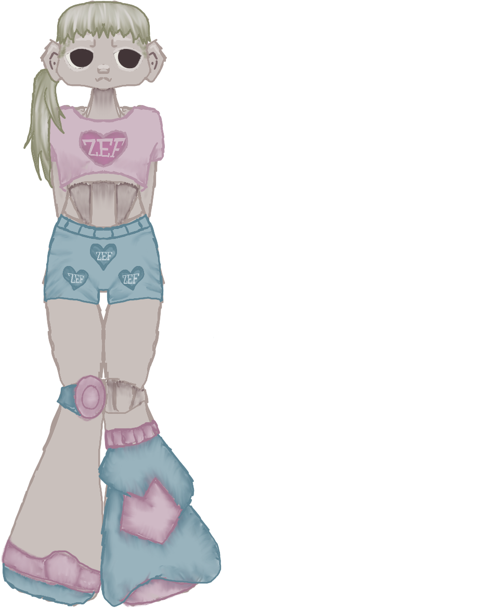
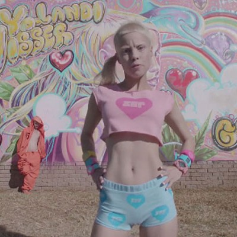
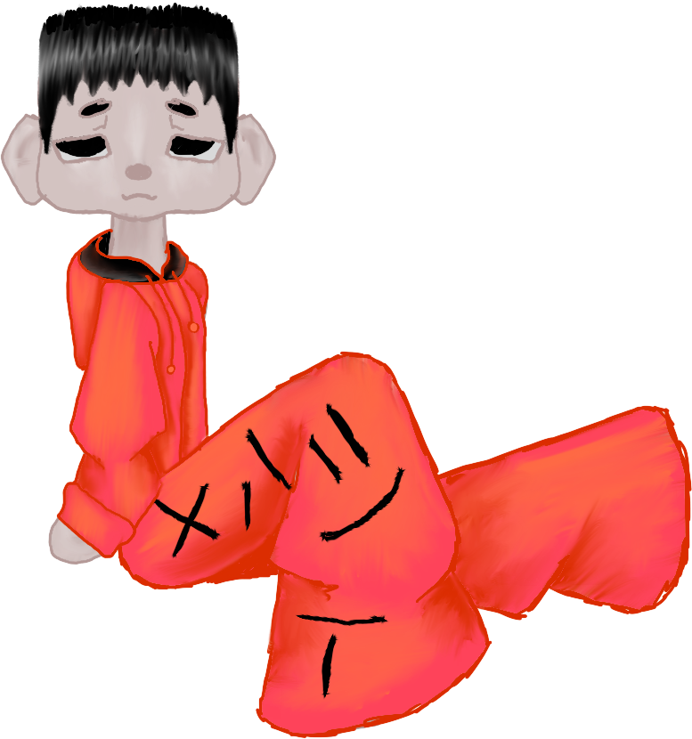
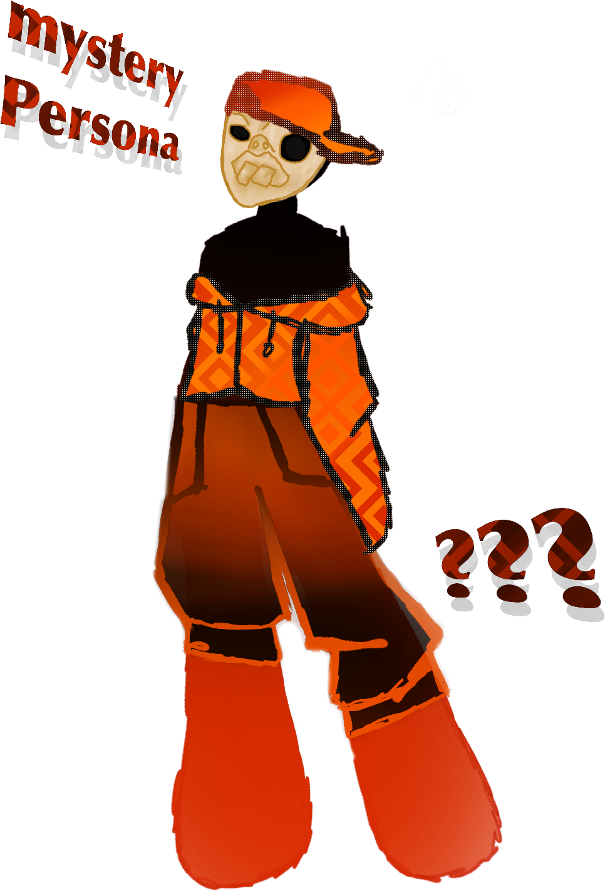
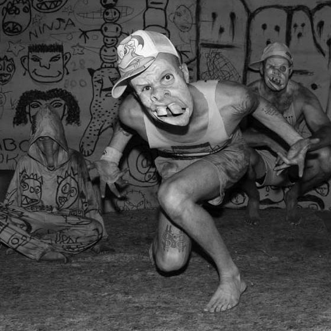

Die Antwoord ist eine südafrikanische Rap-Rave-Gruppe, die im Jahr 2008 in Kapstadt gegründet wurde. Der Name Die Antwoord bedeutet auf Afrikaans „Die Antwort“. Sie verkörpern die südafrikanische Gegenkultur des Zef – eine von Satire, weißer Arbeiterschicht-Ästhetik und Post-Apartheid-Elementen geprägte Mischung aus Rap, Rave und Elektromusik. 2009 veröffentlichten sie ihr Debütalbum als kostenlosen Download im Internet. Das Musikvideo zu Enter the Ninja (2010) ging weltweit viral und machte das Trio international berühmt. Nach einem kurzen Intermezzo beim Major-Label Interscope Records gründeten sie ihr eigenes Label Zef Recordz. Neben der Musik traten die Mitglieder in Filmprojekten auf, darunter Neil Blomkamps Science-Fiction-Film Chappie (2015) sowie die Dokumentation Zef: The Story of Die Antwoord (2024).

Anri du Toit, bekannt unter ihrem Künstlernamen Yolandi Visser,
ist eine südafrikanische Sängerin, Rapperin und Songwriterin.
Sie ist neben Watkin Tudor Jones eine der beiden Sänger
der Alternative-Hip-Hop-Gruppe Die Antwoord.
Visser wirkte 2015 in Neill Blomkamps Film „Chappie“ mit.
Visser war bis in die 2010er Jahre in einer Liebesbeziehung
mit ihrem künstlerischen Weggefährten Watkin Tudor Jones.
Sie haben eine gemeinsame Tochter namens Sixteen Jones,
welche im Jahr 2005 zur Welt kam.


Watkin Tudor Jones ist ein südafrikanischer Musiker, Musikproduzent,
Performer, Konzept- und Medienkünstler sowie Schauspieler.
Er war in Südafrika bereits seit den 1990er Jahren als Rapper bekannt,
unter anderem als Max Normal sowie unter weiteren Künstlernamen.
Internationale Bekanntheit erlangte er als Ninja ab 2010
mit seiner Rap-Rave-Formation Die Antwoord.

Justin de Nobrega, besser bekannt als DJ Hi-Tek,
God oder HITEK5000, ist der südafrikanische Musikproduzent
und das unsichtbare dritte Kernmitglied der Rap-Rave-Gruppe Die Antwoord.
Er prägt den markanten Sound der Band durch elektronische Beats
und ist der kreative Kopf hinter Hits wie „I Fink U Freeky“.
Seine bewusste Meidung der Öffentlichkeit und der Einsatz von Masken
oder Statisten in Videos haben zu einer eigenen Band-Mythologie beigetragen.

| Montag | Dienstag | Mittwoch | Donnerstag | Freitag | Samstag | Sonntag |
|---|---|---|---|---|---|---|
| 1 | 2 | 3 | ||||
| 4 | 5 | 6 | 7 | 8 | 9 | 10 |
| 11 | 12 | 13 | 14 | 15 | 16 Berlin | 17 Berlin |
| 18 | 19 | 20 | 21 | 22 | 23 | 24 |
| 25 | 26 | 27 | 28 | 29 | 30 | 31 |